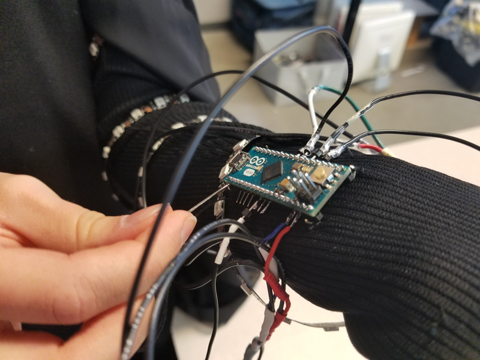
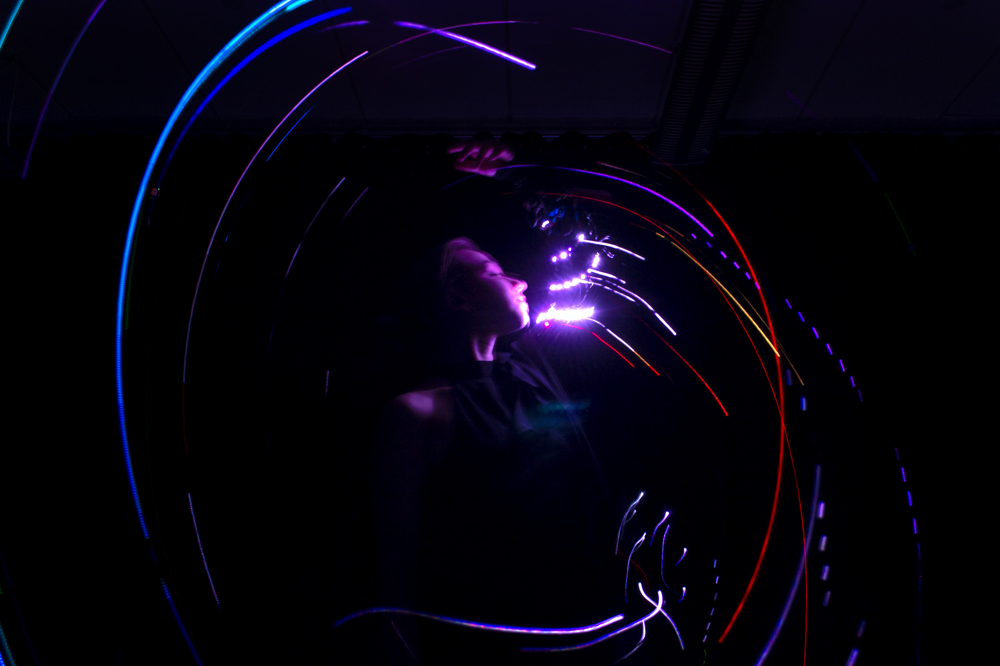
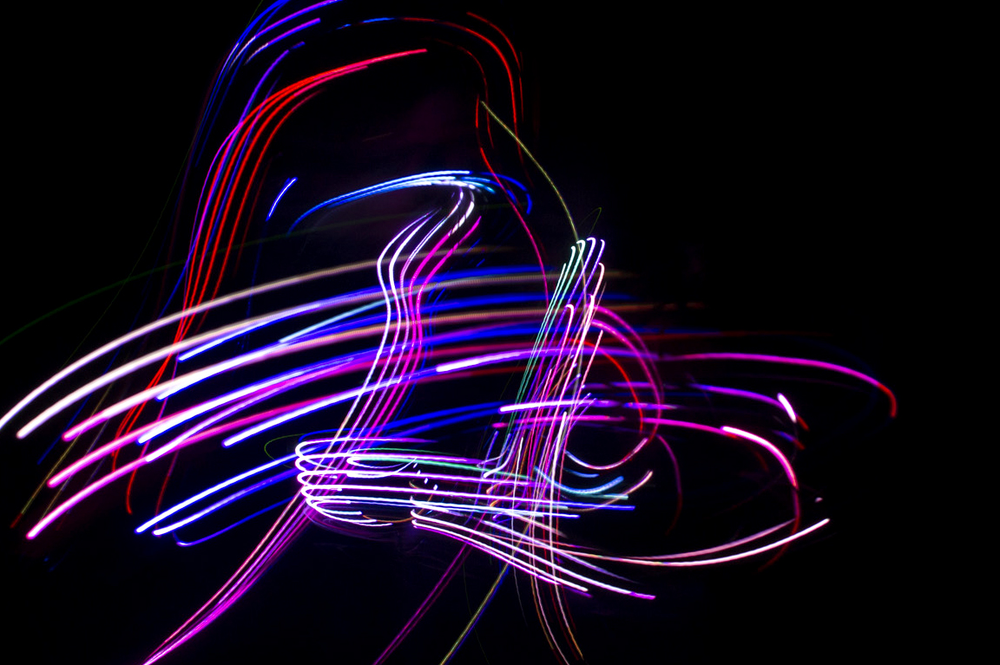
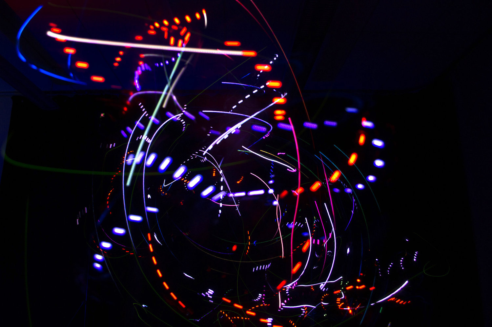
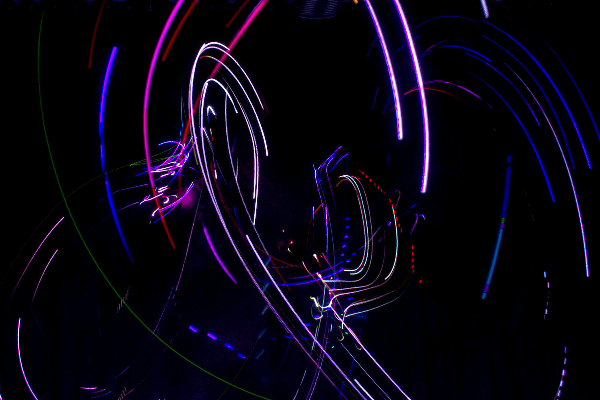
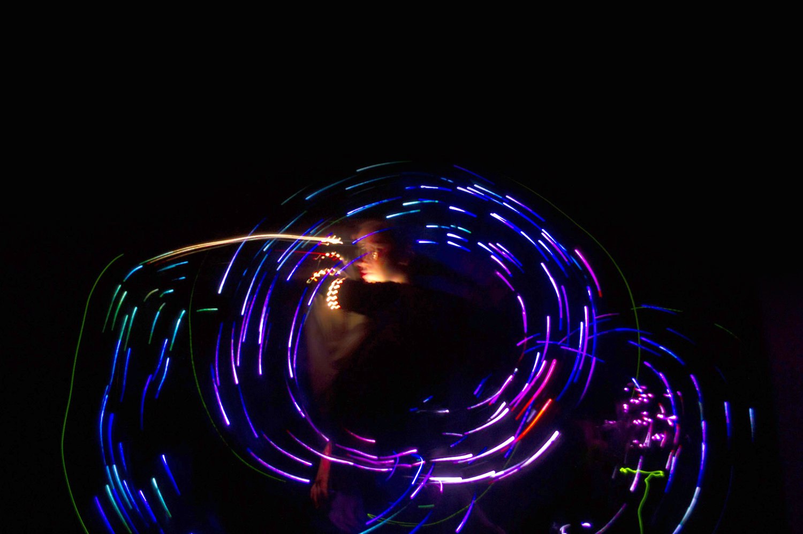
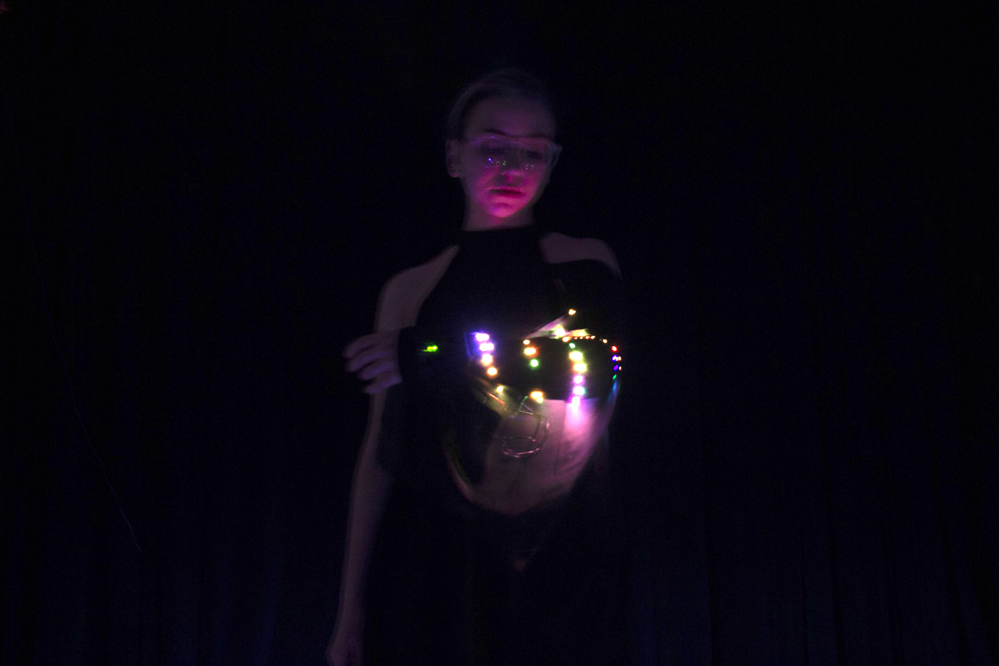
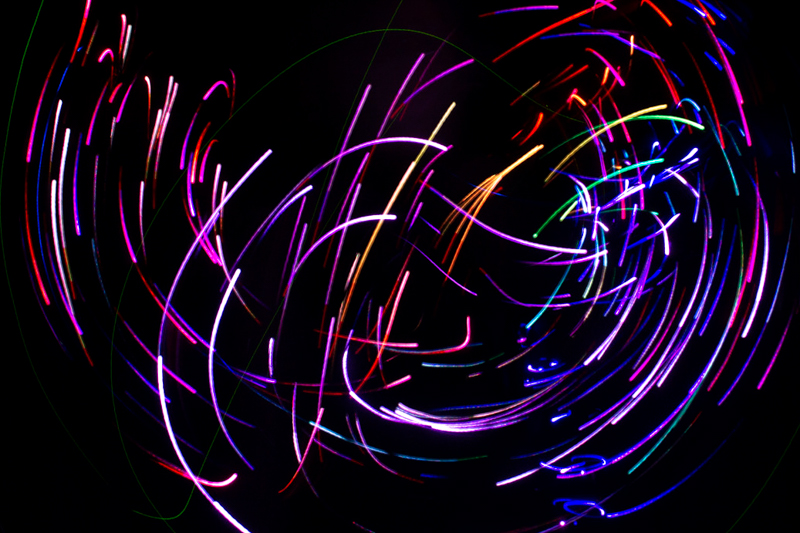
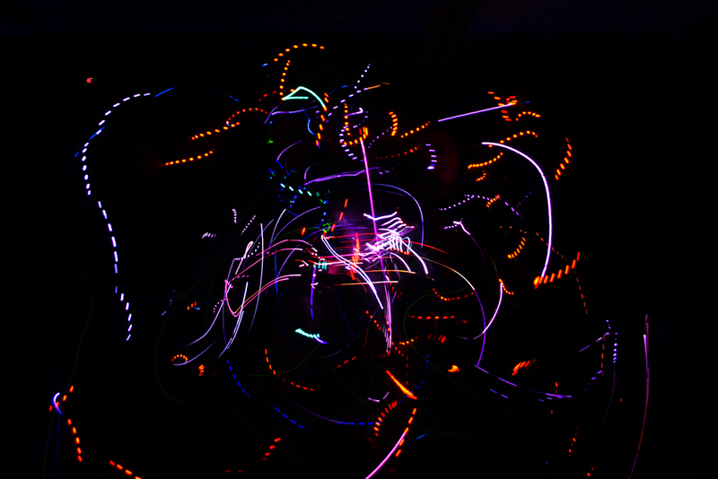

A performance tool
Chroma is a wearable technology aimed towards performance artists. It is a tech wearable arm cloth equipped with a micro-processor, a gyroscope, an accelerometer, a muscle sensor and a programmable LED strip. The aim of this project was to create a dynamic tool that could light paint with the performance artist. Collaboration with Valerie Bourdon.

Control flow
Every sensor on the arm is manipulating the LED output in some way. The muscle sensor (attached to the bicept with an electrode) controls the uniformity of the LED patterns. A more relaxed arm yield a random pattern while a tense arm will yield a unified pattern. The gyroscope controls the Hue, Saturation and Value of the colors through XYZ axis data. On the other hand, the accelerometer detects any sudden movement in the arm and will trigger a custom animation (e.g when the user claps or swings the arm).







